Le44
Brasserie · 44, rue des Fripiers · Mons
Une cuisine française faite sur place, derrière une grosse porte en bois, à deux pas de la Grand-Place. L'ardoise suit le marché ; le menu entrée, plat, dessert est servi même le samedi midi.
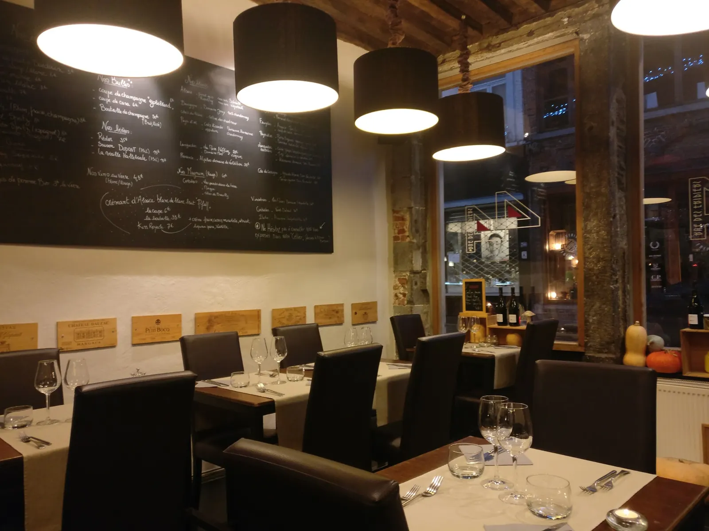
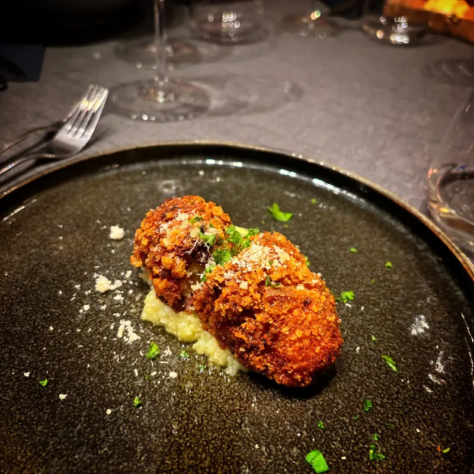
Poussez la grosse porte en bois : tout est cuisiné ici
Au 44 de la rue des Fripiers, une brasserie de cuisine française en plein cœur de Mons. De petites salles chaleureuses, des suspensions noires, des tables dressées, et une grande ardoise où s'écrivent les vins du moment.
En cuisine, des produits frais et des assiettes généreuses ; en salle, un service souriant. Pour une tablée entre amis, il y a aussi l'étage : « […] seuls pour une table de 6 personnes », raconte un client.
J'y était allé il y a 20 ans et déjà à l'époque c'était très bon. Cela faisait longtemps que je voulais y retourner.
Sylvain L., avis Google, 5 étoiles
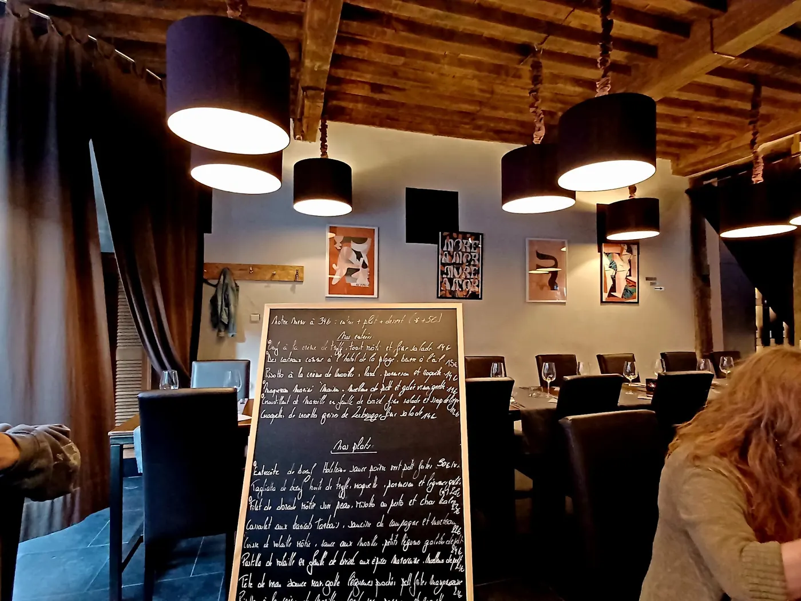
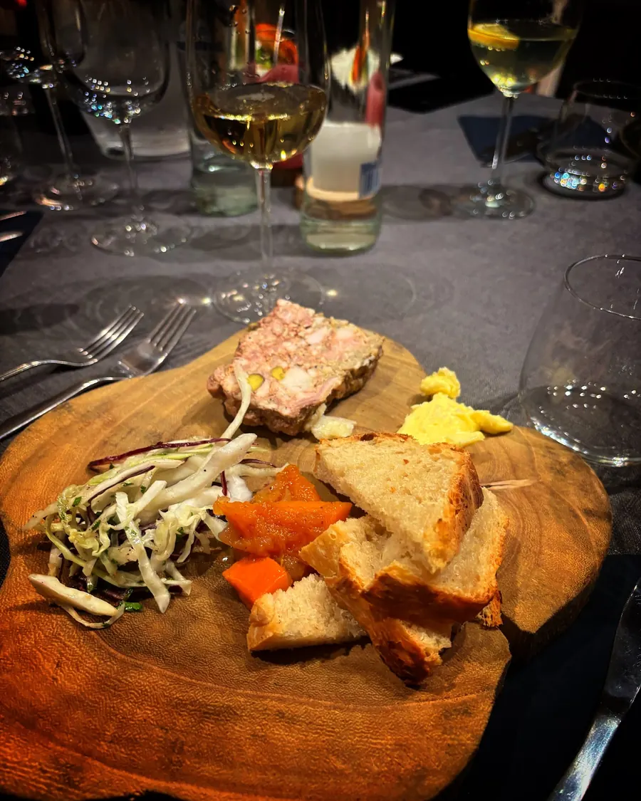
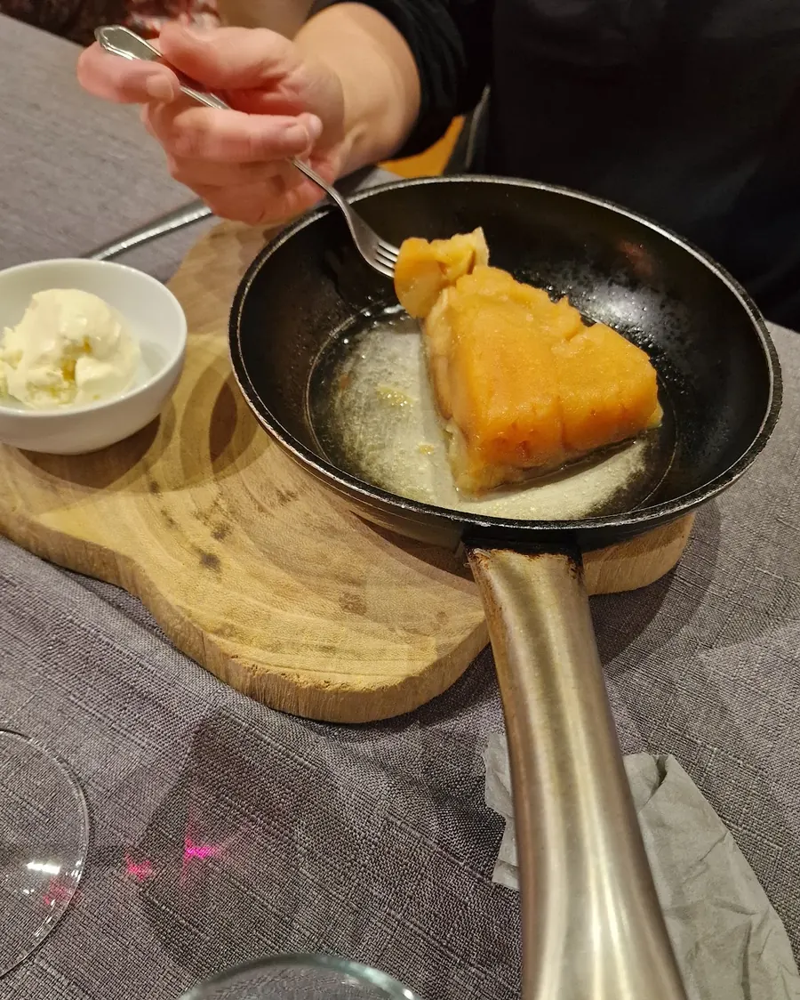
« Rapport qualité prix indéniable […] »Bertrand M., venu à six
« Des portions généreuses, des goûts exquis […] »Jade C., avis Google
« Une jolie table, un service attentionné […] »Virginie D., Montoise vivant à l'étranger
Morilles, Maroilles, crevettes grises : l'ardoise suit le marché
Des produits d'ici et des classiques de brasserie, écrits à la craie et changés avec les saisons. Voici ce qu'on a pu y lire.
Les entrées
Croquettes de crevettes grisescrevettes grises de Zeebrugge, fine salade
Croustillant de Maroillesen feuille de brick, fine salade et sirop de Liège
Risotto à la crème de morilleslard, parmesan et roquette
Couteaux « comme à l'hôtel de la plage »beurre à l'ail
Œuf à la crème de truffetoast rôti et fine salade
Maquereau mariné « maison »gelée vinaigrette
Les plats
Entrecôte de bœuf Holsteinsauce poivre vert, frites
Tagliata de bœufhuile de truffe, roquette, parmesan et légumes grillés
Filet de dorade rôtie sur peaurisotto au pesto et chou kale
Cassoulet aux haricots Tarbaissaucisse de campagne
Cuisse de volaille rôtiesauce aux morilles, petits légumes
Pastilla de volailleen feuille de brick, aux épices marocaines
Tête de veau sauce ravigotelégumes pochés, frites, mayonnaise
Au verre
Crémant d'Alsace blanc de blancs brut Pfaff, à la coupe, en bouteille ou en kir royal.
Les bulles : coupe de champagne, coupe de cava, bouteille de champagne brut ou rosé.
Les vins de la cave : Alsace, Bourgogne, Côtes du Rhône, Languedoc, Provence ; vins au verre en blanc ou en rouge, et des magnums de rouge.
Les bières, dont la Saison Dupont du Hainaut en 75 cl.
« […] une sélection de vin particulierement bien faites », écrit Bertrand M. Les bouteilles sont exposées dans le cellier : on peut aller les voir.
Plats relevés sur l'ardoise de la salle et sur l'ardoise murale des vins. Elle change souvent : les prix et le menu du jour se lisent sur place.Un plat peut manquer le jour de votre visite.
Des assiettes qui vont jusqu'au dessert
Photographiées au 44, du croustillant doré à la meringue. « […] service souriant et plats très bien exécuté », résume Bertrand M.
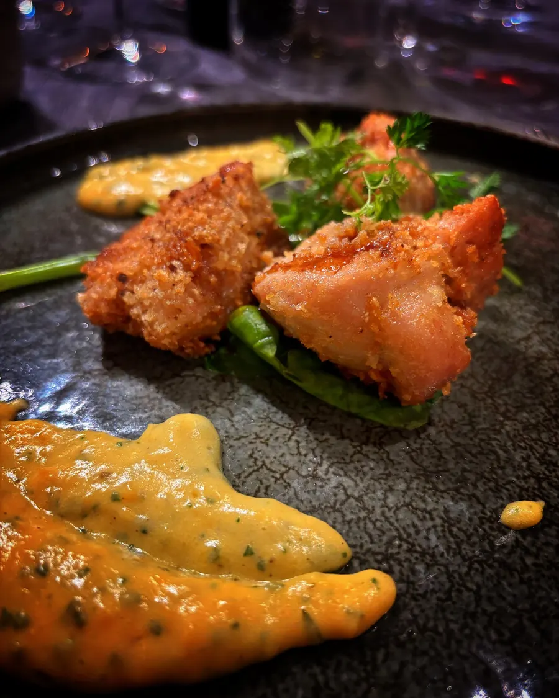
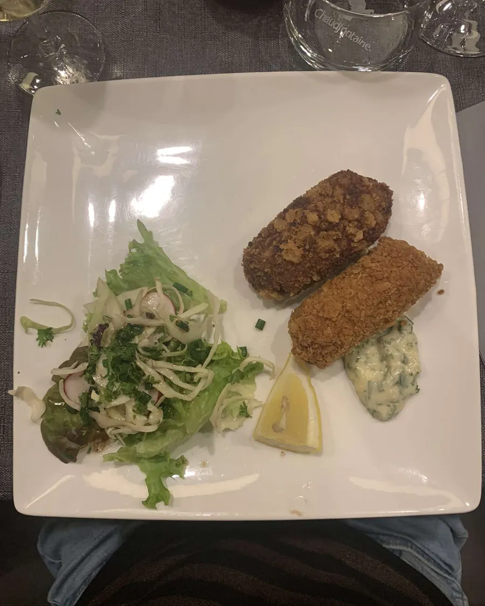
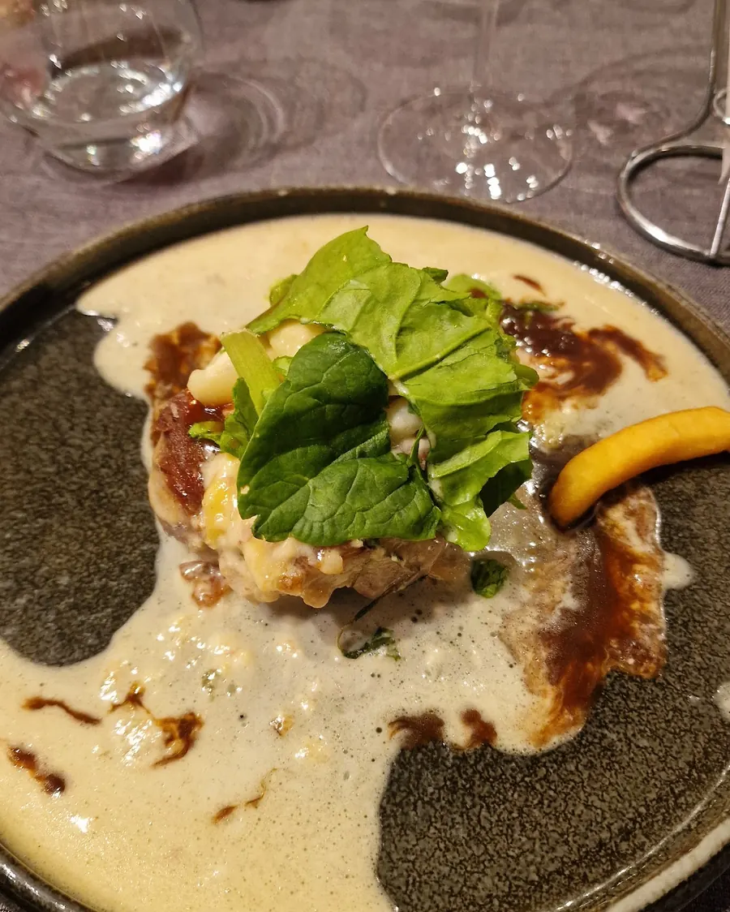
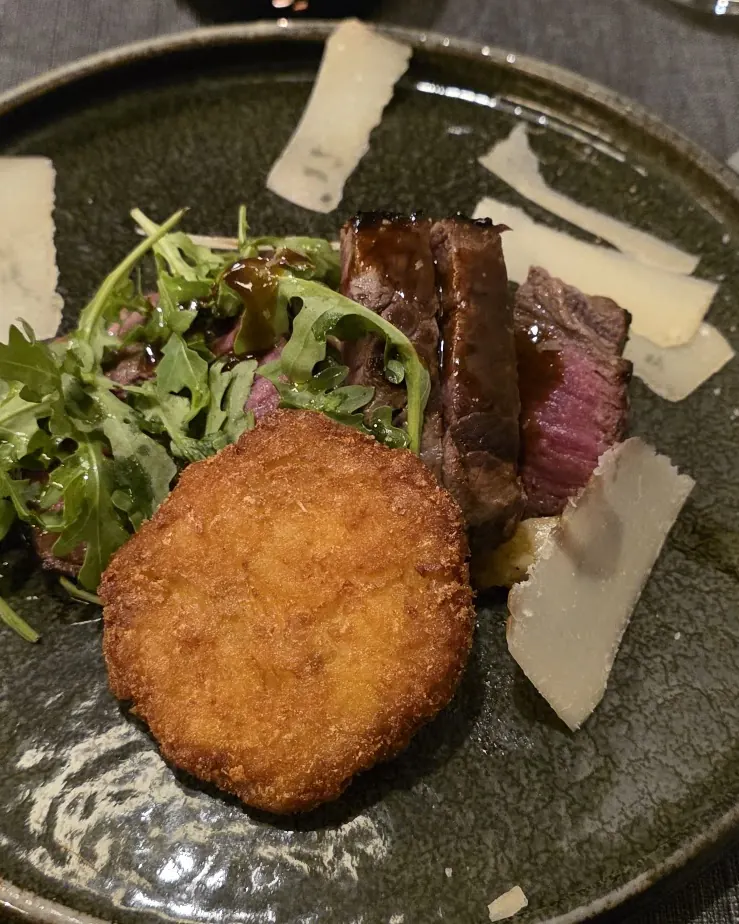
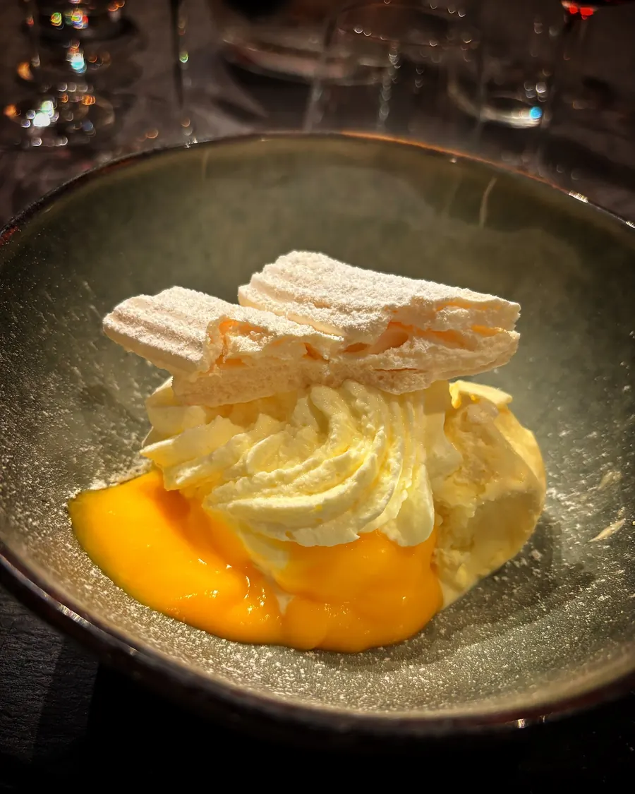
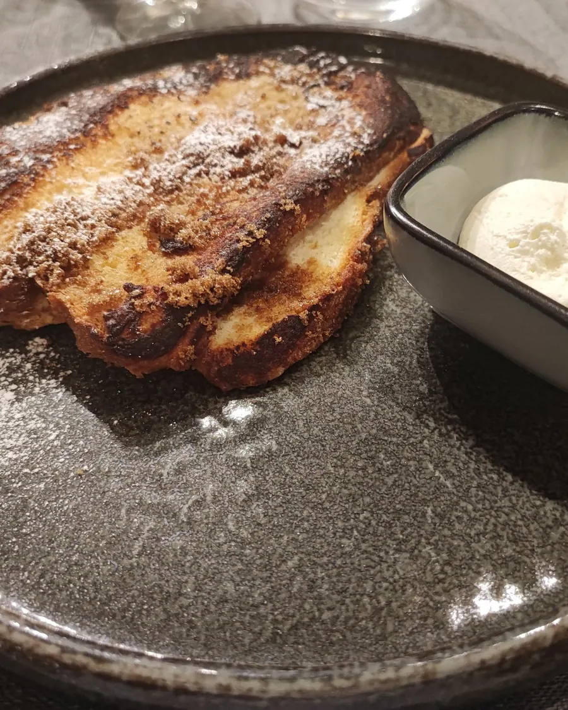
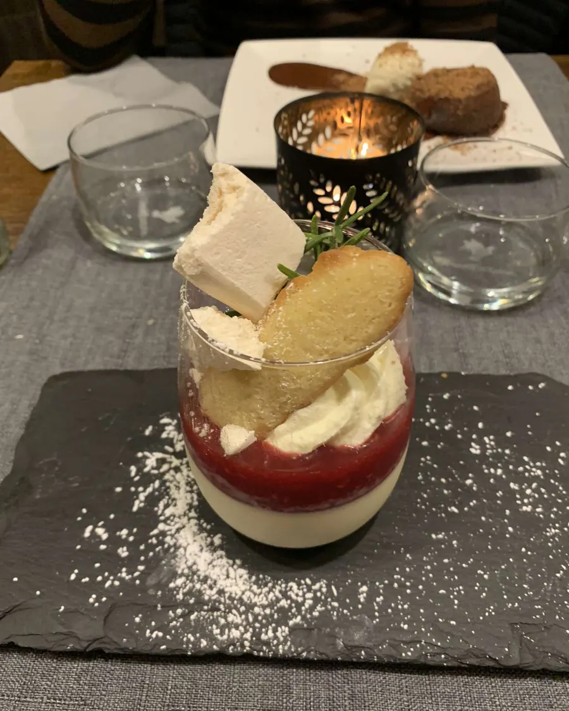
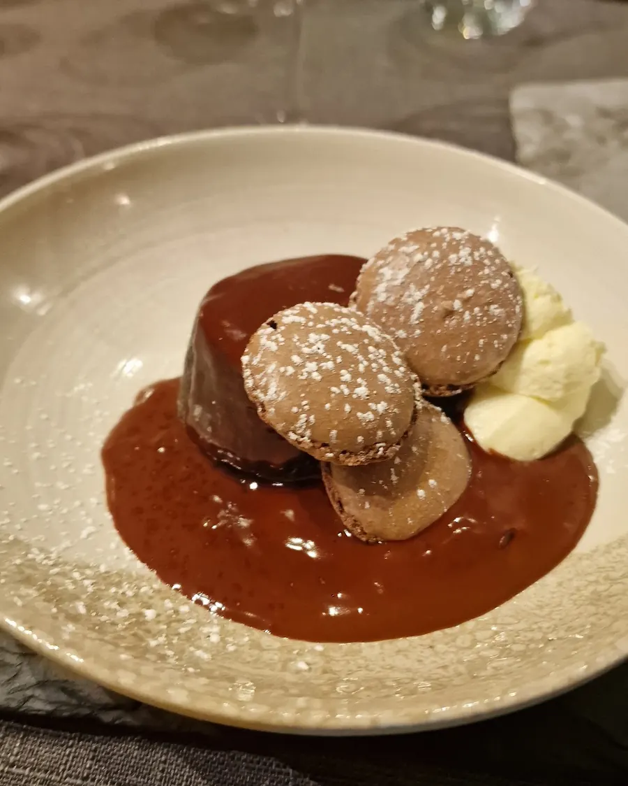
Faites glisser pour voir les assiettes
« […] probablement le meilleur restaurant au niveau rapport qualité prix »Jade C., avis Google, 5 étoiles
4,5 sur 5 sur 178 avis : ce que les clients écrivent sur Google après leur repas au 44.
Votre table au 44, en trente secondes
Le jour, l'heure, le nombre de couverts : seuls les services réellement ouverts sont proposés, midi et soir.
Quatre midis, trois soirs, à deux pas de la Grand-Place
| lundi | fermé |
|---|---|
| mardi | fermé |
| mercredi | 12 h – 14 h 30 |
| jeudi | 12 h – 14 h 30 · 19 h – 21 h 30 |
| vendredi | 12 h – 14 h 30 · 19 h – 21 h 30 |
| samedi | 12 h – 14 h 30 · 19 h – 21 h 30 |
| dimanche | fermé |
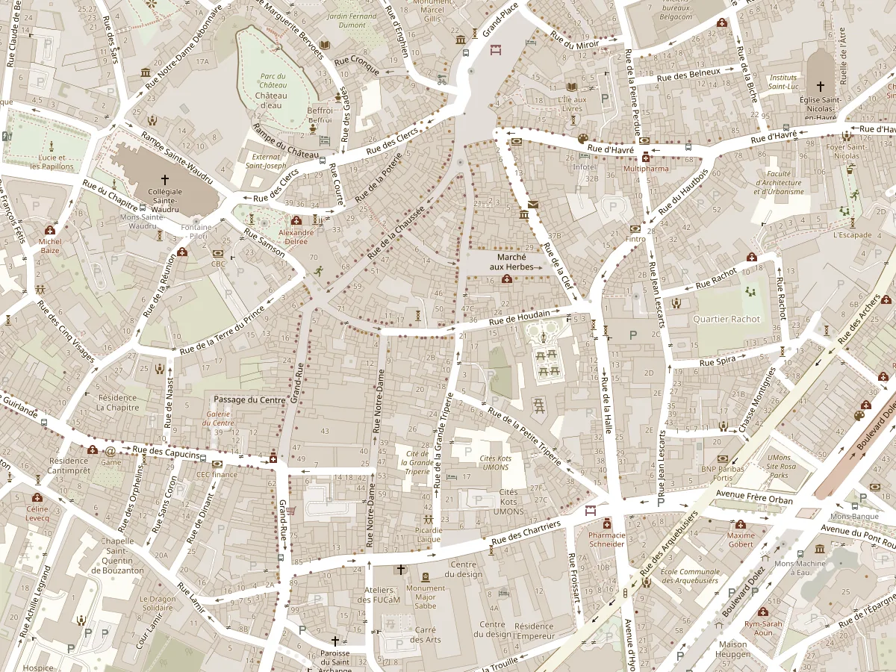
Itinéraire © OpenStreetMapLa porte
« Un peu surprise par la porte d entrée du restaurant, une grosse porte en bois, n hésitez pas à la pousser […] » : le conseil de Juliette, dans son avis.
Une question ?
Une allergie, une grande tablée : appelez le 065 31 37 94 ou écrivez au 44.